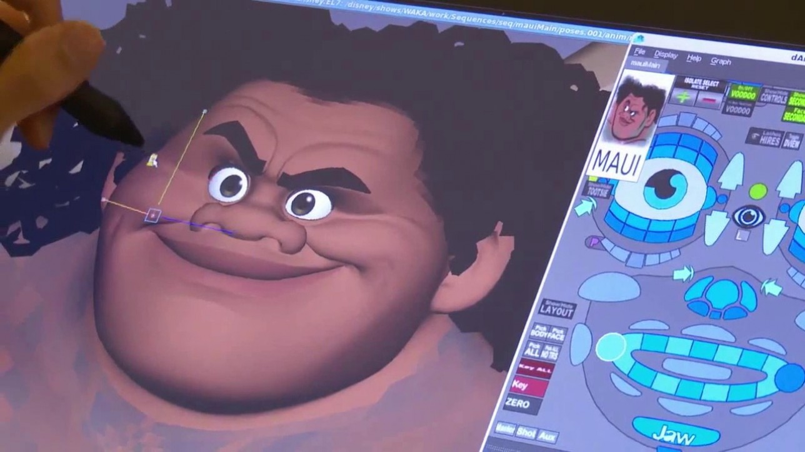

Author: Zining Luo
In Disney's animated movies, every blade of grass sways in the wind, every strand of hair is crystal clear, every movement is fluid and natural… From Mickey Mouse to every princess, each character has left an indelible impression on generations of people. For hundreds of years, Disney has created countless dreams for adults and children alike. And these household-name animations all began with a simple pencil, then rode the wave of technology to create something truly magical, from hand-drawn lines to digital wizardry. Disney's boundless imagination continues to reshape the map of the animated world, from the earliest hand-drawn sketches to electrostatic printing and now to CGI technology. Yet, innovation continues, but it all starts with that first pencil stroke.
When people think of Disney, they often think of Disney's “boss,” Mickey Mouse. “Steamboat Willie” is also a true pioneering work. This animated film is the first talking animation and Mickey's debut. Then there's “Snow White and the Seven Dwarfs,” which is the first full-length color film. Its appearance marks a breakthrough in Disney's animated films. In the production process, it used tracing technology, where Disney used live actors and filmed them, and animators drew each frame through a transparent glass. It also used the multi-plane camera created for solving the problem of characters and backgrounds moving simultaneously in the 1937 film “The Old Mill,” which gave the background a sense of depth and made the character's movements more fluid and realistic. However, the production process of hand-drawn animation still requires a lot of time and high costs to complete, and there are certain limitations in terms of expression
In the late 1980s, Disney and Pixar collaborated to develop the CA PS system, which digitally colored and post-processed animation, revolutionizing the traditional hand-drawn process. Before that, Disney used innovative visual and musical fusion in “Fantasia” by using multi-plane cameras and the most advanced color technology of the time to combine music with abstract animated scenes, creating a visually striking experience. This was also an attempt to combine hand-drawn and technical elements. In 1961, Disney used XEROX copying technology for the first time in “101 Dalmatians” to simplify the hand-drawn animation process, converting animators' sketches directly into film, which made the animation style more modern. The complete integration of hand-drawn and digital techniques can be seen in the 1989 film “The Little Mermaid,” which is one of Disney's finest hand-drawn animated films. The film also marked the beginning of Disney's animation renaissance, as it maintained its traditional hand-drawn style while introducing some digital technologies such as CAPS. Although it still relied on hand-drawn techniques, its colors were richer, the backgrounds more complex, and it showcased the perfect combination of digital technology and hand-drawn animation.